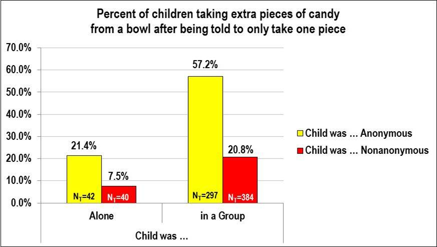
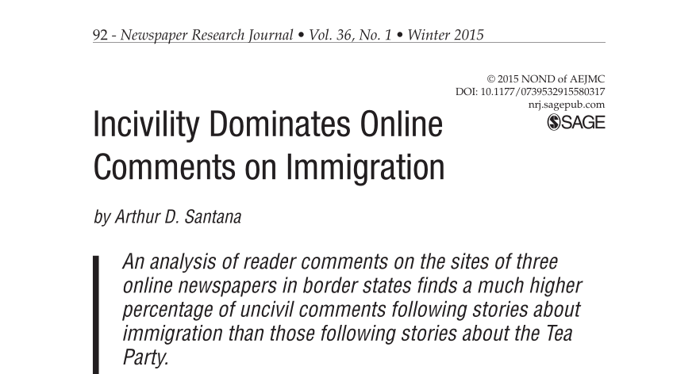

Los efectos del anonimato en el comportamiento
Análisis del comportamiento humano a través de distintos estudios psicológicos, 13 de noviembre 2020
Las empresas no quieren que seas anónimo, esa parte está clara. Casi todos los servicios “gratis” que están en internet se pagan con tu información, con casos de sobra que lo demuestran, desde el caso de Cambridge Analytica mencionado en “El anonimato y el negocio de la información”, hasta el artículo de New York Times “Your Apps Know Where You Were Last Night, and They’re Not Keeping It Secret”. Lo que no se menciona sin embargo, es que al gobierno tampoco le conviene que seas anónimo, y, más importante, a vos no te conviene que otros lo sean.
Esta es una de las consecuencias de lo que se conoce como desindividualización. Este proceso es algo que suele tomar lugar en grupos grandes e implica que, a medida que el anonimato incrementa debido a la dificultad de identificar individuos en una multitud, también aumenta la violencia y el comportamiento inmoral. En pocas palabras, las personas suelen mostrar su lado oscuro cuando no están siendo vigilados.
Edward Diener en Halloween de 1973 realizó un experimento que consistía en que una mujer le abra la puerta a niños que llegaban disfrazados y, antes de excusarse e irse a otro cuarto, les decía que podían agarrar UN caramelo de un bowl que se encontraba en la puerta. El estudio realizado a más de 1000 niños de Seattle, EEUU, demostró que cuando el chico estaba solo y la mujer le preguntaba su nombre y dirección (eran otros tiempos, antes ofrecer caramelos a niños ajenos estaba bien visto), el 7.5% de los chicos tomaban más caramelos de lo indicado, pero si se trataba de un grupo de niños al que nadie les preguntaba siquiera su nombre, el 57.2% tomaba más caramelos.
Años después, en 1976, Diener repitió el experimento solo que esta vez agregando un espejo frente al bowl para que todos los niños vean su reflejo antes de agarrar caramelos. De los 363 niños disfrazados para Halloween, la mitad participó del estudio sin un espejo, mientras la otra mitad tenía el espejo instalado. Del primer grupo, el 28.5% agarró más caramelos a pesar de que les indiquen lo contrario, mientras en la presencia su reflejo solamente el 14.5% rompió las normas.
El primer estudio demuestra esta teoría de desindividualización. Cuando la gente no tiene posibilidad de ser identificada, pueden actuar de manera irresponsable, sin miedo a que los condenen por sus acciones. Más específico, cuando se analiza la conducta de adolescentes en internet se encuentra que algunos cambian levemente su personalidad, mientras otros sufren cambios drásticos en su comportamiento (Suler, 2004).
El segundo estudio por el otro lado hace referencia a la conciencia. Cuando uno forma parte de una multitud, suele desinhibirse y actuar de manera espontánea, sin pensamiento previo. El reflejo de uno mismo afecta sus acciones dado que hace que el sujeto se observe al momento de actuar, interrumpe la inhibición y fuerza la reflexión. Esto es algo inexistente cuando se trata de crímenes en línea, y es incluso peor porque el ofensor tampoco ve el efecto en la víctima, lo que facilita el abuso libre de culpa.
Suler (2004) describe que la invisibilidad en línea les da a las personas la valentía para actuar de maneras en las que no actuarían normalmente. Él explica cómo facilita que se expresen libremente con solo el hecho de ser invisibles físicamente, por más que su identidad no sea secreta. Y si bien este estudio era sobre ciberbullying y las diferencias en el comportamiento de adolescentes entre comunicaciones en línea y fuera de línea, también aplica para cualquier otro tipo de abuso a través de internet. Esconderse detrás de la pantalla lleva a que el atacante no se sienta juzgado, e incluso cuando hay represalias, la invisibilidad fomenta este tipo de actividades.
Como dicen Bryce y Fraser (2013), los adolescentes creen que esconderse tras un teclado les ofrece confianza para decir más cosas negativas de las que dirían en persona. Y esto tiene demostraciones constantes en cualquier sitio web que ofrezca algo de invisibilidad, desde Reddit con ejemplos varios como los vistos en “Las (des)ventajas de ser invisible”, hasta los comentarios en diarios virtuales, como se describe en “Virtuous or Vitriolic”, un artículo escrito por Arthur Santana en 2014.
En este último artículo se analiza el efecto del anonimato en los comentarios expresados por lectores de diarios online. Santana, el autor, describe que si bien el anonimato online permite que las personas expresen sus puntos de vista, especialmente cuando se tratan de opiniones poco populares, el diálogo constructivo decae ante la presencia de lenguaje racista, amenazas y agresión. En el estudio que realizó descubrió que el 56% de los comentaristas identificados realizaban comentarios ofensivos, mientras que cuando se trataba de comentaristas anónimos, este número ascendía al 85%.
Esto demuestra el dilema que presenta permitir el anonimato. Si bien llevaría a que más personas discutan sus puntos de vista y se expresen libremente sin miedo a ser juzgadas, también hay que tener en cuenta un brote de agresión y amenazas. Gino Corti, profesor en IFTS nr. 5 y Project Manager Oracle Cloud, mencionó en la entrevista que “el anonimato no sería necesario si no hubiese persecución de ideologías”, un punto de vista verdaderamente acertado y que ofrece un punto de vista fresco a la situación.
En mi opinión, no podría haberlo expresado de manera más simple. Si no hubiese persecución de ideologías y prejuicios hacia los demás, entonces todos podrían actuar en persona de la misma manera que lo harían de forma anónima, no tendrían nada para ocultar. Sin embargo, hay que tener en cuenta las implicaciones de permitir todas las ideologías sin limitación alguna. Esto se remonta al debate sobre libertad de expresión analizado en Las (des)ventajas de ser invisible, donde se menciona que si bien Estados Unidos y casi todo Europa se hacen llamar defensores de la libertad, también condenan la negación del holocausto y otras ideologías extremistas que instigan al odio.
En resumen, en todos lados hay alguna limitación en relación a lo que uno puede expresar o hacer, y mientras existan limitaciones, existirán también quienes aprovechan el anonimato para ignorar estos límites impuestos por la sociedad o las autoridades.
Índice
- Home
- Introducción
- Artículos
- Las contraseñas no son débiles, nosotros lo somos
- La verdad sobre los sitios "No seguros"
- Phishing, la verdadera amenaza al navegar por internet
- Man in the Middle y WiFi Pineapples
- "La rebelión de las máquinas" y ataques DDoS
- El anonimato y el negocio de la información
- Ataques de fuerza bruta y los diccionarios de contraseñas
- "Las (des)ventajas de ser invisible"
- El comportamiento humano y el anonimato
- Encuestas
- Conclusión
- Bibliografía